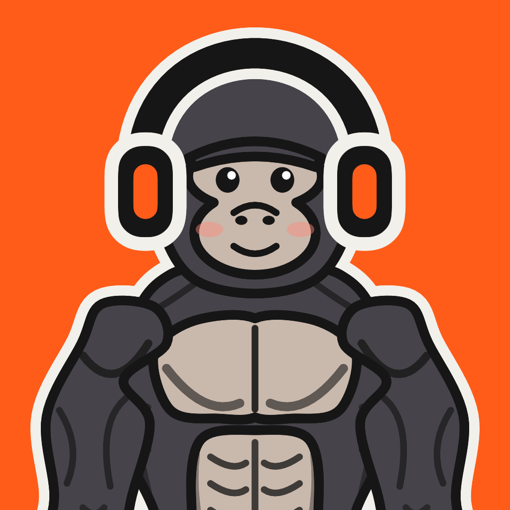
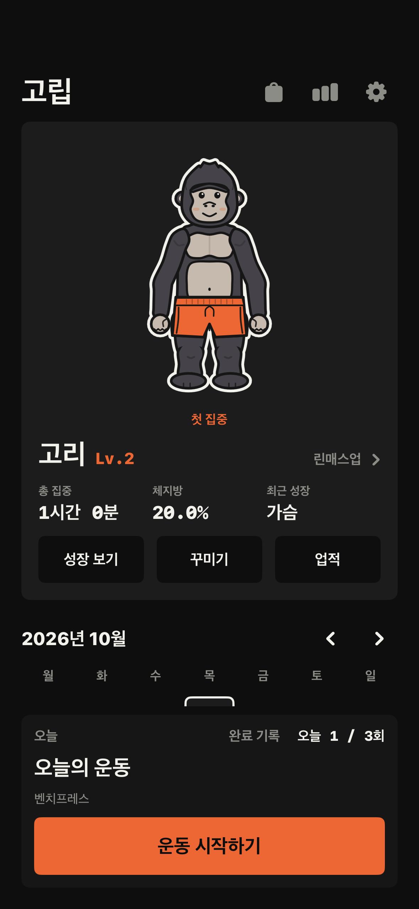
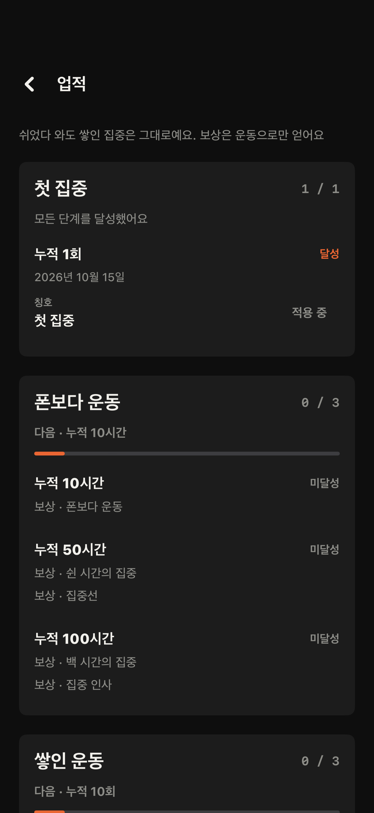
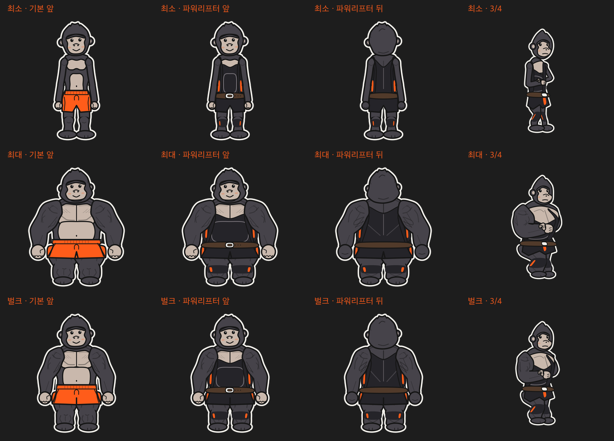
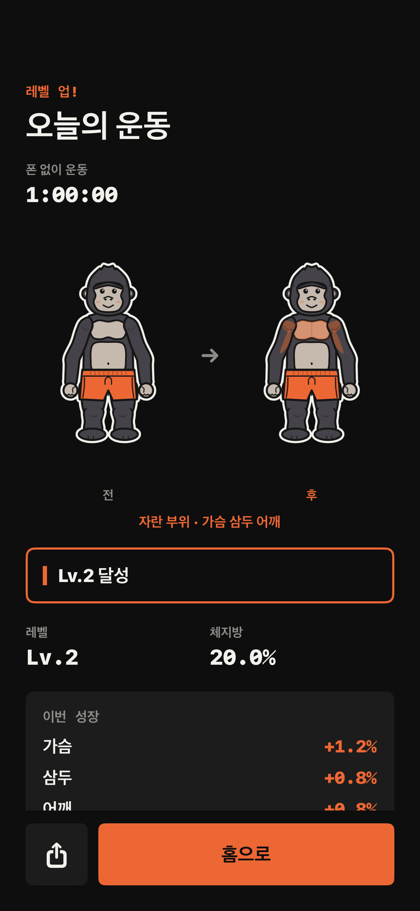
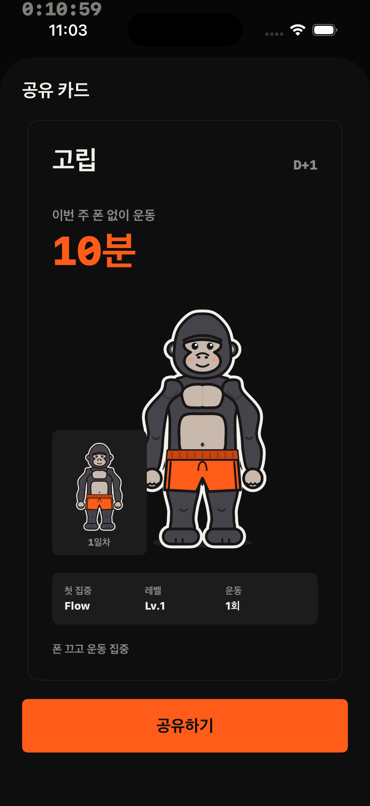

운동에 집중한 시간이
나만의 고릴라 성장으로.

화면의 이름·시간·수치는 검증용 예시입니다. 개발 브랜치의 화면이며 실제 사용자 성과가 아닙니다.
폰은 내려놓고,
성장은 눈에 보이게.
고립은 운동 기록을 더 많이 입력하게 만드는 대신, 운동에 집중한 시간을 쌓도록 돕는 앱입니다. 운동 중에는 허용한 앱만 사용할 수 있게 하고, 운동을 마치면 집중한 시간과 운동 부위에 따라 고릴라의 모습이 달라집니다.
운동 전에는 준비를 짧게, 운동 중에는 조작을 적게, 운동 후에는 변화를 분명하게 보여주는 경험을 목표로 했습니다.
프로젝트 배경
운동 중 스마트폰은 음악을 듣고 기록을 남기는 도구이면서, 운동에서 시선을 빼앗는 도구이기도 합니다. 단순히 모든 앱을 막으면 필요한 기능까지 불편해지고, 상세한 기록을 요구하면 오히려 스마트폰을 더 자주 보게 됩니다.
고립은 이 충돌에서 출발했습니다. 필요한 앱과 기록은 남겨 두면서 불필요한 사용을 줄이고, 집중한 시간을 다시 운동하고 싶어지는 보상으로 연결하고자 했습니다.
설계에서 중요하게 본 세 가지
기록을 줄이되, 기억해야 할 부담은 남기지 않기
처음에는 운동 중 조작을 최소화하는 것에 무게를 뒀습니다. 하지만 세트와 무게를 운동이 끝난 뒤 입력하려면 잊기 쉽다는 문제가 있었습니다.
그래서 운동 중 기록 기능을 유지하고 반복 입력을 줄였습니다. 직전 세트의 값을 복사하고, 기록창을 다시 열면 마지막 종목으로 돌아가며, 입력한 값은 바로 저장하도록 했습니다. 화면을 덜 보는 목표와 필요한 기록을 남기는 목표를 함께 다뤘습니다.
쉬는 날이 실패로 느껴지지 않는 보상
연속 기록이 끊기면 보상이 사라지는 방식 대신, 지금까지 쌓은 집중을 인정하는 누적 업적을 선택했습니다. 운동을 쉬었다가 돌아와도 기록과 달성한 업적이 남습니다.
또한 성장 보상을 판매하지 않고, 구매 항목은 모션과 코스튬으로 한정했습니다. 사용자가 운동으로 얻는 변화와 구매로 얻는 꾸미기를 구분한 제품 원칙입니다.

캐릭터의 변화가 운동 부위와 연결되도록 만들기
운동 결과를 단순한 경험치 막대로만 보여주지 않고, 일곱 부위가 따로 변하는 캐릭터로 표현했습니다. Rive 기반 2.5D 포즈 시스템을 구성해 체형이 달라도 같은 포즈와 코스튬을 사용할 수 있도록 했습니다.
새 포즈는 데이터 정의를 추가하는 방식으로 확장하고, 애니메이션 자산을 읽지 못하면 기존 Canvas 그림으로 대체합니다. 성장 계산과 그림 표현을 분리해 계산 규칙을 바꾸지 않고 캐릭터를 개선할 수 있게 했습니다.

핵심 기능
- 집중 운동: 허용한 앱을 제외한 앱 사용을 제한하고, 운동 종류와 집중 시간을 기록합니다.
- 빠른 세트 기록: 운동 중 세트·무게·횟수를 적고 직전 세트를 복사합니다. 종료 후 확인 화면으로 기록이 이어집니다.
- 부위별 캐릭터 성장: 가슴·등·이두·삼두·어깨·하체·복근이 각각 성장하고, 체형에 맞춰 캐릭터의 크기와 선명도가 달라집니다.
- 성장 비교와 공유: 처음 모습과 현재 모습을 비교하고, 폰 없이 운동한 시간을 공유 카드로 남깁니다.
- 누적 업적: 연속 출석 대신 누적 시간·운동 횟수·운동일 등으로 칭호와 전용 꾸미기를 제공합니다.
- 꾸미기 상점: 코스튬과 모션을 고르는 상점을 구현했습니다. 근육 성장과 꾸미기 구매는 분리했습니다.
사용 흐름
운동 선택 → 시작 준비 → 집중 운동 → 실제 운동 확인 → 성장·업적 결과 → 홈
운동 중에는 시간 확인·운동 종류 전환·선택적인 세트 기록·종료에 집중합니다. 캐릭터 성장과 꾸미기 경험은 운동을 마친 뒤에 배치했습니다.


구현과 검증
SwiftUI와 SwiftData로 운동 계획·진행 중 세션·확정 기록·성장 이력을 연결했습니다. 앱을 다시 열어도 운동 상태와 확인 대기 기록을 복원하고, 세션별 성장 이력으로 같은 운동의 보상이 중복 반영되지 않도록 했습니다.
성장과 업적 계산은 화면·저장소와 분리해 테스트할 수 있게 구성했습니다. 업적은 별도의 달성 값을 원본으로 저장하지 않고, 확정된 과거 기록을 다시 계산해 도출합니다.
집중 기능에는 FamilyControls·ManagedSettings·DeviceActivity를 사용했습니다. 허용 앱 외 제한과 운동 종료 시 해제 등 핵심 흐름은 실기기에서 확인했습니다. 선택 로그인과 꾸미기 구매는 운동·성장 흐름과 분리해 구현했습니다.
2026년 10월 15일 개발 브랜치에서는 자동화 테스트 97개와 시뮬레이터·실기기용 서명 빌드를 통과했고, 컴파일 경고는 0개였습니다. 실제 제공자 인증·상점 거래·장시간 백그라운드 동작 검증은 출시 전 확인을 이어가고 있습니다.
성장 표현의 의미
캐릭터의 근육과 체지방 수치는 게임 내 성장 표현입니다. 실제 신체 변화를 측정하거나 예측한 값이 아닙니다.
프로젝트를 통해 배운 점
기능을 줄이는 것과 사용자의 부담을 줄이는 것은 같지 않았습니다. 운동 중 기록 버튼을 없애면 화면 조작은 줄어도, 나중에 세트와 무게를 기억해야 하는 부담이 커집니다.
고립을 만들며 어떤 기능을 없앨지보다, 사용자가 언제 무엇을 기억하고 선택해야 하는지를 먼저 살펴보게 됐습니다. 제품 규칙과 예외 상황을 명확히 정의하고, AI 코딩 도구가 만든 구현도 테스트와 실제 화면으로 확인하며 개선했습니다.
현재는 출시 전 검증과 화면 이동·사용성 개선을 진행하고 있습니다. 실제 사용 데이터를 얻은 뒤 운동 시작까지의 부담과 기록 조작 수, 성장 보상의 이해도를 확인할 계획입니다.